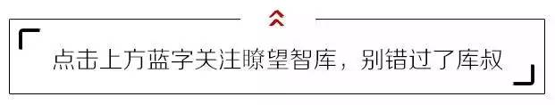
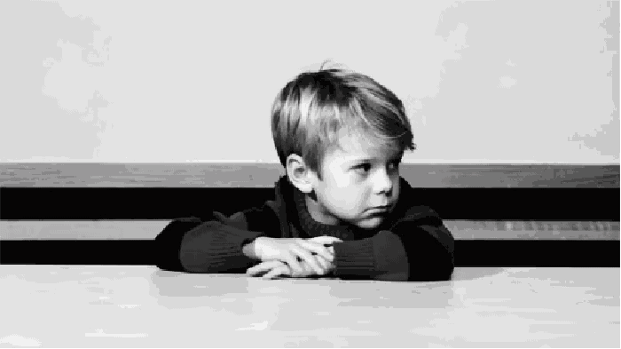

没！事！别！老！呆！在！家！里！

为什么我这么不建议你呆在家里？
文 | 陆JJ
本文转载微信公众号“陆JJ“（ID：tiyan818），不代表瞭望智库观点。
1
家，偷懒成本最低的地方
我赌5毛钱，你在家里一定不会好好工作。
一会儿想吃东西了去冰箱里翻翻，一会儿累了回到床上去躺躺，一会儿无聊了去刷刷手机……
还没人管你，多爽。
家看上去最温暖，也最充满诱惑，你可以毫不费力地享受这些诱惑。
正因为偷懒成本低，所以偷懒的可能性将会大幅度提升。
而外部工作环境，将会为你隔离掉大部分诱惑——抱歉，没床给你躺了，没电视机给你看了。
咖啡馆、自习室这些地方，除你之外还有大量陌生人，他们都是学习者。
这种积极的氛围将会带动你更好地学习。
其次，有陌生人环绕在你的周围，这将催生出你更多的兴奋与紧张，亦有利于你的专注。
最后，大量学习者共处一室，彼此之间互为隐性的监督者。
恭喜你，你无法为所欲为了。

当你想偷懒时，看着别人都在看书与学习，你那张老脸也挂不住，自然会又回归到工作的状态中。
2
环境，能唤起人的仪式感
每一种环境，都有各自的属性与功能。
家，即私人旅店，本就是休息的地方，不是用来工作或者学习的。
躺在床上，不可能工作好。
正如你在自习室里，永远也不可能睡好一样。
当你试图模糊环境的边界与功能时，该环境原本可能带给你的意义与收益也会随之而减少。
比如：你走进图书馆，图书馆作为一种符号，传达给你的潜在信息是——很好，既然来到这里，就请专心地学习吧。
也就是说：环境能够作用于人，给人以暗示，唤起仪式感，从而促进人类进行符合环境特性的行为。
人类的行为又成为了环境的一部分，二者相互促进，建立有益的小型生态圈。

3
人，都是社交动物
“独学而无友，则孤陋而寡闻。”
这是《礼记·学记》中的一句话。
一个人如果只顾自己学，而不与人交换经验与见解，便容易陷入知识狭隘、视野局限的境地。
人，是注定要与人产生连接的。
家作为内部环境，始终是闭塞的、不流通的；身在外部环境的好处就是，你不得不实时与人交流。
你被逼了！
被逼出舒适区！
被逼去与自己不熟悉的陌生人交流！
这种交流的好处是：信息共享、价值碰撞、巩固固有知识、融合外部知识。
在商务领域，曾经有过这样一个讨论：当今世界，沟通成本逐渐变低，即时通讯、电子邮件、视频会议已经如此发达，传统的面对面办公模式是否还有其意义？
Jackie Reses是雅虎全球人力资源总监，他提出 “互动” 和 “体验” 是传统办公模式的最大意义，也是在家里的即时通讯所无法带来的。
从组织心理学的角度来看，面对面的沟通更能促进人与人之间的真正理解。因为面对面的方式，更能确保人类积极地投入。
在这一过程中，人的每一个行为动作、手势、表情细节都会暴露在彼此的视野之下，这对于建立理解与合作至关重要。

4
在家，好像会更忧郁一点
长期呆在家里的人，其社会属性也在一点点脱落。
我最深有体会的是，曾经为了准备考研，我连续宅在家一个月没出去过。
朋友见到我的第一句话是：“你跟个人猿泰山似的！”
其实是这样的，个体一旦疏离社会群体，他的语言能力、行动力、表现力都会全线衰退。
这还只是能力上的衰退，另外还有心理上的消极影响。
我们都体会过，呆在家里，人容易陷入负面消极的漩涡。
为了验证这一点，我还采访了10位微信好友，他们最近一条带有负面情绪的朋友圈，都是在家里发出的。
家里盛产孤独。
此外，呆在家里更容易迷茫，因为当我们与外部世界失联时，我们便成为了个体意识的囚徒。
我们终日一个人在家呆着，越来越看不清自己和自己未来的道路。
山本耀司有句话，说的即是此理：
“自己” 这个东西是看不见的。
撞上一些别的什么，反弹回来，才了解 “自己” 。
也就是说，是其他事物成全了我们，使我们自己能够成为自己。

最近还发现一件事，很多人在家不快乐，是因为晒不到阳光啊！
国外的一项研究表明，阳光对人类有积极作用，能让人摆脱疲劳，充满活力，这是因为大脑血清素的作用。
——维他命D3促使大脑生成更多血清素，而阳光对皮肤的照射就能产生维他命D3。
那么，想要快乐吗朋友？
想要活力吗朋友？
请快点出门去晒太阳吧！
5
越优秀，越是喜欢到处浪
没有人会讨厌宅，但是相比于没有挑战性的宅，优秀的人更喜欢冒险与挑战。
为什么优秀的人更善于走出去？
首先一个最基本的道理是，他们有地方浪。
他们的视野更开阔，他们的信息渠道更丰富，他们的社交网络更发达。
所以我一直持一个观点：
越优秀的人，对资源的占有率越高，能把握更新鲜的信息源，他们是一群站在信息高地上的人。
对他们来说，“离家”已经不是一种单纯的行为，而是一种提升自我的策略。

从小到大，我最明显的一点感受是，盘踞在我周围的优秀者，总是生活在别处。
你又去哪里浪啦？
那里有这个活动，你怎么知道的啊？
当他们拥有优先掌握信息的能力，实则就已经拥有了超越同龄人的可能。
小时候也许差距还不会拉大，但是越长大，这种差距会越明显。
政府政策、市场动向、行业资讯、全球动态……当你还在关心粮食和蔬菜，优秀者已经把眼光投向更远的地方。
卢梭曾说：我只有在走路时思考，如果停下脚步，我便停止思考。
华兹华斯也是，他曾经在英国行走百万里，在行走中写诗，在行走中浪漫。
这也正是我为什么鼓励你少呆在家里，多往外走的原因。
若你试图变得优秀，就请离开家。
当你没有离开它的能力，那里就是即将把你埋葬的温柔乡。
作者简介：陆JJ，一个十八线编剧，一个做影视的小朋友。专注于写小作文和小日记，主要分享他的个人思考、成长经验、干货知识、情感纠纷。
总监制：吴亮
监制：夏宇
责任编辑：戴丽丽 李逸博
编务：黄俊峰

内容转载自公众号